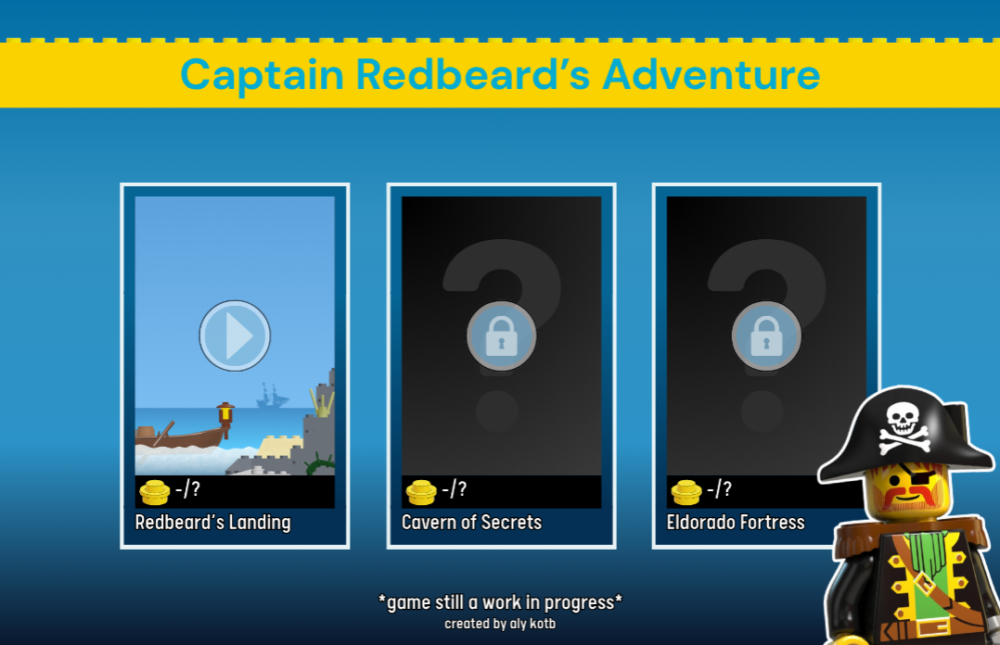
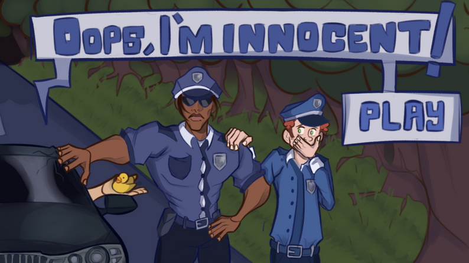
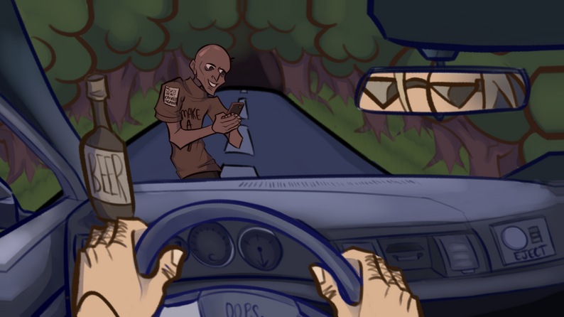
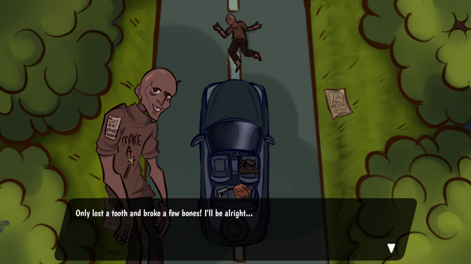
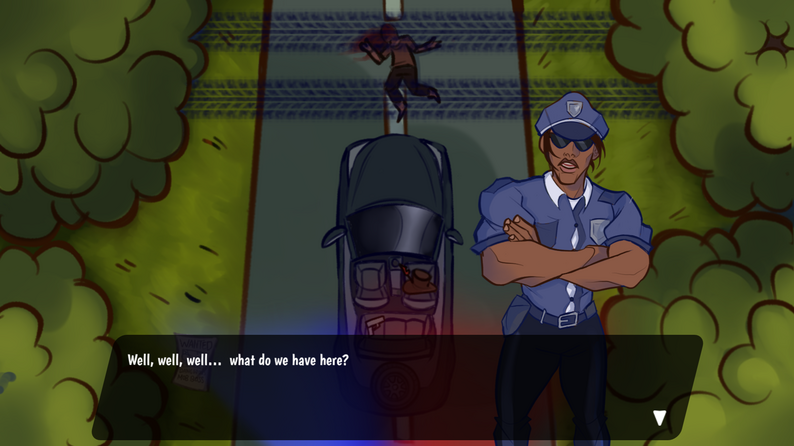
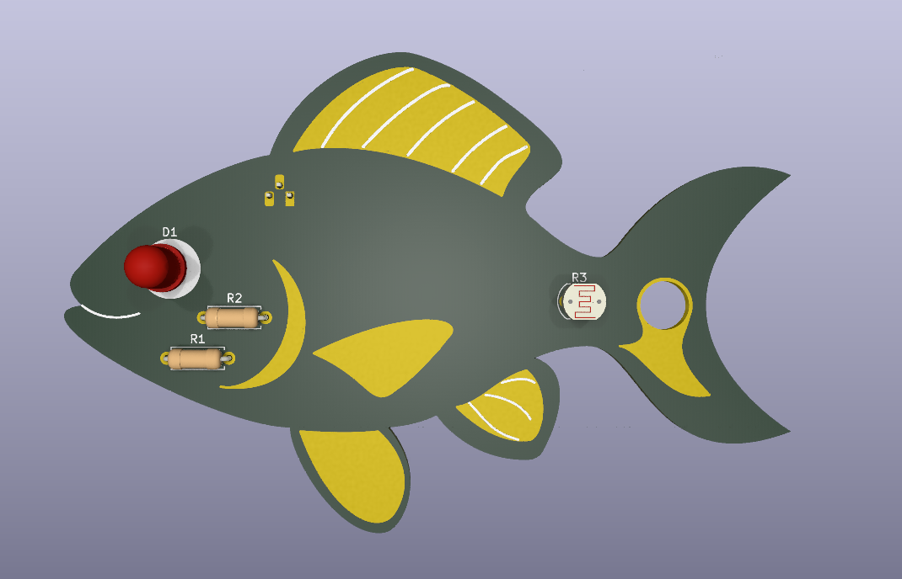
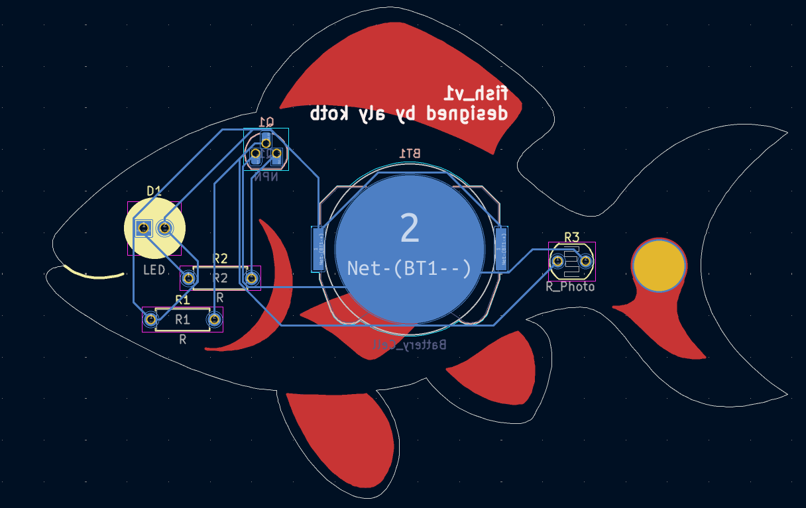
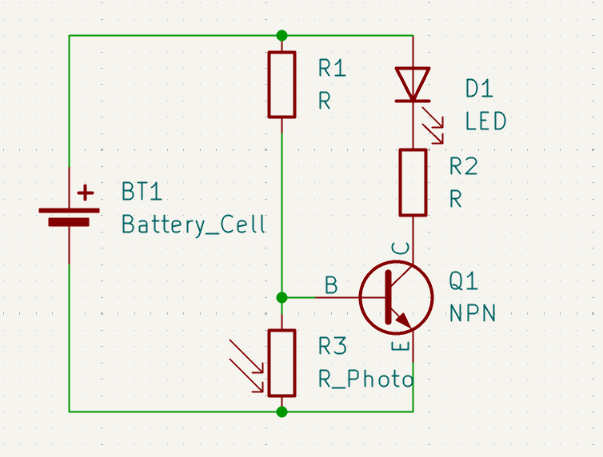
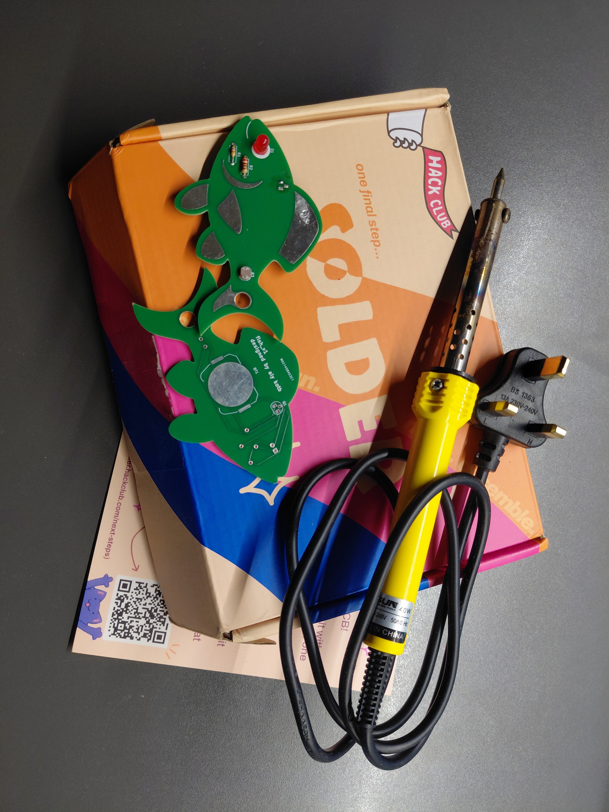

Projects I've worked on
https://imadesomecoolthings.com/
I definitely don't get to work on projects that often, but I've made some pretty cool things since joining Hack Club last January. :pI've listed some of my most recent projects below, albeit in no particular order.
Captain Redbeard's Adventure
Over the summer, I was trying to come up with projects to work on for Hack Club's Summer of Making, with the goal of wracking up enough hours to earn a 3D printer. While brainstorming, the idea of creating a 2D classic-lego-pirate-themed platformer popped to mind and I was immediately hooked.I absolutely loooved the browser-based Lego games of the 2010s, so I couldn't be more excited to make my own. This was my first time using Godot and it was as rewarding as it was challenging.
The final product was a 2D classic-lego-pirate-themed platformer heavily inspired by the 2D LEGO® platformers of the mid-2010s and the 1989-1997 LEGO® Pirates theme.


You can play it at alymakesstuff.itch.io/captain-redbeards-adventure! I'm super proud of how this turned out, especially for it being my first time using Godot. :D
Oops, I'm Innocent!
For my next game that summer, I wanted to make a visual novel. Tiny issue... the thought of having to make game art terrified me (and still does). Luckily, my friend Z came to the rescue and made all the game's stunning visuals.Together, we created Oops, I'm Innocent!, a darkly humorous visual novel and point-and-click adventure.




This game is genuinely soooo much fun to play, try it out at alymakesstuff.itch.io/oops-im-innocent!
Fish_v1
Created for Hack Club's Solder YSWS, this project was my intro to printed circuit boards (PCBs).Using KiCAD, I created a fish-shaped keychain PCB, consisting of a super simple circuit that turns on an LED in dim light.




Hack Club then sent me an electronics kit and a $10 grant to order my PCB, which is so cool?! You can see my actual physical PCBs in one of the photos above!!!
My (old) personal webpage
Over the summer, I also made a personal webpage. This was my first real time working with html, css and javascript, but I made something I was definitely proud of at the time. >:DDFeatures include:
- profile picture with buttons to change the theme of the photo
- moving clouds in the background, using css animations
- recent projects gallery
- terminal-style about section with working commands

The personal website you're on right now is wayyy cooler, buuuut you can explore my old one at https://6829ascs.github.io/personal-webpage/.
I actually reused the clouds/sky/forest background from my old website somewhere on the website you're on rn!
Projects I'd like to work on next
https://whatsnext.com/
I'm not too sure what I'll make next, but I'd like to maybe:- make another game
- make a macropad
- make a pcb nfc card